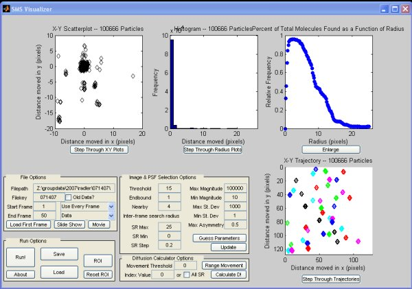

Single Molecule Visualizer and Tracker
Introduction
SMS VIS is a program developed to track and identify nanocars using a optical scanning microscope.
Download and Installation
MCR Installer - The MATLAB component runtime that must be installed before running the program installer.
SMS_Tracker_pkg.exe - The installer for the tracking program.
Sample Data - Some sample data to get you started.
Documentation
The manual and documentation is available for download.
You can also download the poster.

The main screen. From this screen you can load up the individual images for analysis. Once images have been loaded, they are analized for intensity, allowing the user to set cut-offs for target molecules against random noise. This screen allows for an overview of the key points of the data. While the data is being processed, it shows the actual image files with an overlay of molecules that will be kept for further analysis.
This is the search radius plot. This proved to be one of the more useful plots. It plots points assocaiated as a function of search radius. If there were immobile particles, there would be a large peak within a few pixels of zero, however, for more mobile samples the peak would shift out, and the distribution would change. See the poster for more information.
The right plot is a histogram of distance the particles have moved from frame to frame. This is an indicator of movement - bead samples (no movement) have a much higher peak around zero, while mobile samples show a distribution that tends off of zero.
The left plot is similar, howevr it is in the x and y directions. This allows one to perform analysis for sample or image drift. In this image, there is no drift as the mean lies on the origin.

On the left is an image of a randomly travelling particle, one can see that it stays mainly in a 1-2 pixel radius, and has no preferred direction.
This trajectory is from a molecule that could be a nanocar - it has a larger movement magnitude (a few pixels) and is oriented along a preferential direction.
Revision history;
Version 1.0 - Working molecule identification, partially functional diffusion calculator